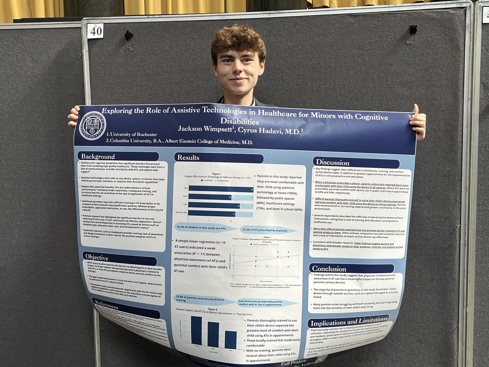
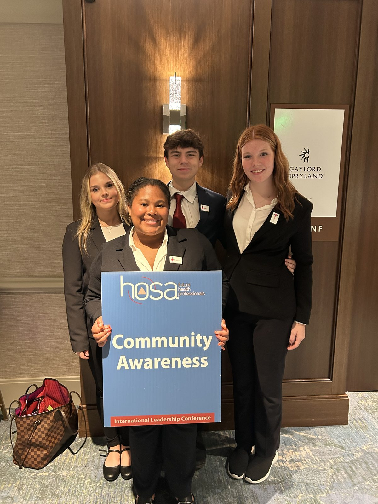
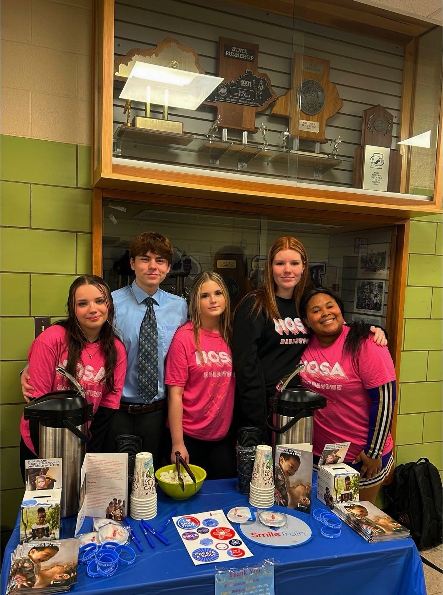

These two programs get my deepest time and attention, which is why enrollment is small and there's an application. Here's exactly what your student would be signing up for, step by step, with no mystery.
Almost no Kentucky high schooler graduates with real research experience. I did it from Bardstown with a survey, a mentor, and a lot of persistence: a published paper in Pathways: Stanford Journal of Public Health, my own research poster, and submissions to two national conferences so far. I mentor students through that same road.
The study is real and you can read it right now. "Exploring the Role of Assistive Technologies in Healthcare for Minors with Cognitive Disabilities," published in Pathways: Stanford Journal of Public Health, Vol. 3 (2025), surveying 24 Bardstown families, mentored by Cyrus Hadavi, M.D. of the Albert Einstein College of Medicine. This is exactly the kind of project your student and I would build together.
Read the published paperOne student may join me as a collaborator on my ongoing work in philosophy and religion. There is no menu of named projects to choose from, because everything I write belongs to one continuous research program. The question that runs through all of it is this: when explicit religious belief declines, what happens to the things religion once provided? Ritual, authority, belonging, sacrifice, and meaning do not simply vanish, and my writing traces where they go.
In practice, these projects are long-form written essays built on close reading, research, argument, and revision rather than experiments or surveys. Current and planned topic areas include secular ritual and where people find belonging outside of church; mourning and memorial practices in digital spaces; productivity, burnout, and work as a modern form of devotion; celebrity culture and fan attachment; education as a moral institution; and the way translation shapes how readers understand ancient religious texts.
A collaborator works alongside me on whichever piece is active. That means reading the sources, discussing the arguments, drafting sections, and revising them until they hold up. This track suits a student who loves big questions and serious writing.
Two honest boundaries apply. First, collaboration is limited to my philosophical and theoretical work, and my studies involving human participants are not open to student collaborators. Second, if a student brings me an empirical idea of their own that involves people, we can absolutely pursue it, but it runs through the full process below, including its own school-level IRB approval, with me serving as lead mentor on the project.

As a triple major in Brain & Cognitive Sciences, Psychology, and Religion, I'm strongest in psychology, neuroscience, religion, and philosophy. The projects I coach best are mixed-methods work: surveys, literature reviews, and long written academic pieces. I have foundational statistics and R coding experience from my university coursework, which is plenty for a solid high school project. If your student wants to build a particle accelerator, I'm not your guy. If they want to ask a real question about people, minds, beliefs, or ideas and answer it properly, I am.
A short application, mostly about what your student is genuinely curious about. Grades matter far less than curiosity and follow-through. I respond to every application within a week.
We talk through the idea, the timeline, and the cost, and I make sure this is actually the right fit before anyone commits to anything.
We narrow curiosity into a research question that a high schooler can genuinely answer in a semester. This step matters more than any other.
Your student reads what's already known and writes a short research proposal: what they're asking, how they'll answer it, and why it matters. I coach; they write.
Any project using human participants, even a simple survey, needs review before data collection starts. At the high school level that review board is a school administrator, a science teacher, a health professional such as the school nurse, and me as research mentor. The student's own proposal is what gets reviewed. This protects your student and everyone in their study, and learning to do it right is part of the point.
Surveys go out, data comes in, and we make sense of it together. Basic statistical analysis and R coding support are available when the project calls for it.
Abstract, introduction, methods, results, discussion. A real paper with real structure, written by your student, edited relentlessly by both of us.
We target the right high school and undergraduate journals and conferences, and I coach the poster and presentation. I've made my own poster and submitted to two conferences, so we're not guessing at this part.
This one is for the student who wants to run for office, found something, win a grant, or take a service project further than anyone expects. I coach it because I lived it, from club member to district officer, and I still hold the relationships that came with it.
I've run for and won office in Key Club, ending up as Kentucky-Tennessee District Treasurer over a $150,000+ budget and head of the district's Reactivation Committee. I've applied for grants alongside my teachers for our school's health science department and won $5,000 from the KY Board of Education. I've presented at Dollywood, district convention, my school board, and the Kentucky Board of Education. And I keep real relationships: Smile Train Inc., where I was their most engaged ambassador during my year, Key Club at the district level, and HOSA connections built through our Love Your Smile Month collaboration. When your student needs a door opened, I often know whose door it is.


Same short application. I want to know what your student wants to build, lead, or change, in their own words.
We size up the goal honestly. Running for club officer is one kind of project; founding a chapter or pursuing district office is another, and the cost and timeline differ.
Whatever the goal is, we break it into a real plan: the calendar, the people to talk to, the asks to make, and what winning actually requires.
Speech and presentation coaching from someone who's presented everywhere from a school board room to Dollywood. Fundraising playbooks. Grant writing basics. How to talk to adults who control budgets.
Your student does the running, founding, asking, and presenting. I coach through every step, and where my relationships can open a door, I make the introduction.
Win or lose, we document everything and shape it for service awards, scholarship essays, and college applications. The Barbara James awards, presidential service awards, and officer positions on my own record started exactly this way.
I take 2-3 students per program each semester so every project gets real attention, and I read every application personally within a week. If you're not sure which fits, apply anyway and pick "not sure yet." That's what the free call is for.
Apply for a selective programQuestions first? Book a free 20-minute call or text me at (502) 331-1384.